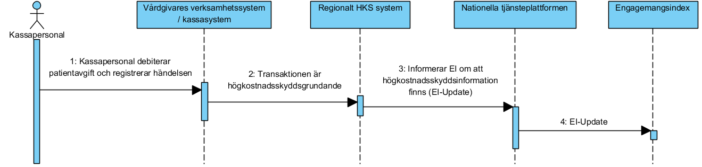
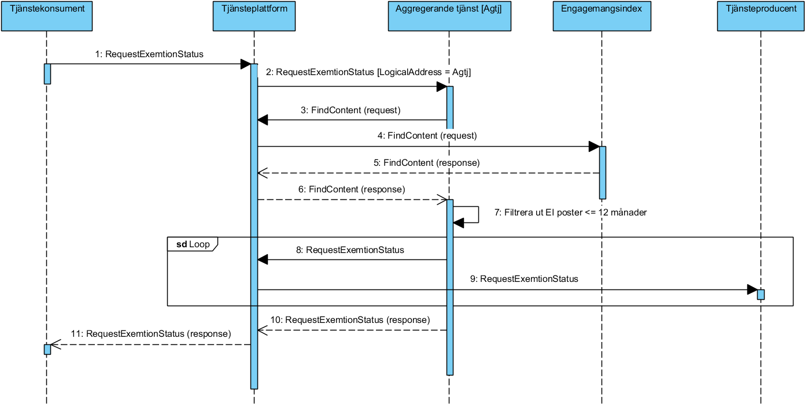
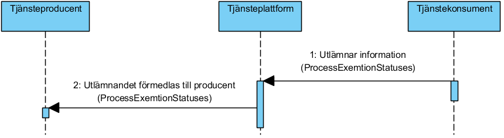

financial: patientfees: exemption
1.0.0 - draft
financial: patientfees: exemption - Local Development build (v1.0.0) built by the FHIR (HL7® FHIR® Standard) Build Tools. See the Directory of published versions
Källa: Högkostnadsskydd, tjänstekontraktbeskrivning version 1.0 (2024-03-25), TKB_financial_patientfees_exemption.docx.
I detta avsnitt beskrivs hur T-boken tillämpats i tjänstedomänen. Avsnittet syftar till att ge läsaren överblick och förståelse. Avsnittet innehåller inga regler, men ger ett sammanhang för de regler som beskrivs i övriga delar av dokumentet.
Tjänsten för beskrivning av högkostnadsskydd erbjuder ett utlämnande av information i vårdgivarnas system för patientadministration. Utgångspunkten för tjänsten i denna tjänstedomän är i första hand patientens och professionens behov av utlämnande till patients besökskostnader ur ett nationellt eller ett regionalt perspektiv. I båda fallen är syftet att historisk information sammanställs från det eller de verksamhetssystem där det finns historik via s.k. aggregerande tjänster, snarare än att begära information från ett specifikt system eller en specifik verksamhet.
Tjänstekontrakten erbjuder även möjlighet att nå information från ett specifikt system eller en specifik verksamhet.
Följande flödesmodeller beskriver översiktligt hur tjänstekontrakten är tänkta att användas. Tjänstekonsument (K) och tjänsteproducenter (P) är markerade i figurerna.
Nedanstående diagram visar hur flödet principiellt ser ut när information ur kontrakt i tjänstedomänen efterfrågas och hanteras.
Sekvensdiagrammet visar det informationsutbyte som sker mellan sjukvårdshuvudmans eller agents system och engagemangsindex innan en begäran om ett utlämnande senare kan ske. Det är varje sjukvårdshuvudmans ansvar att uppdatera engagemangsindex för att visa att sjukvårdshuvudman håller högkostnadsskyddsinformation om patient. Via engagemangsindex kan senare (se sekvensdiagram 2 nedan) en begäran om utlämnande skickas till berörda parter via aggregerad tjänst.

Sekvensdiagrammet visar begäran om ett utlämnande av högkostnadsskyddsinformation, vilket är första steget i informationsutbytet, initierat av den part som vill inhämta information. Konsument adresserar kontraktet RequestExemptionStatuses med Ineras organisationsnummer som logisk adress för att aktivera aggregerad tjänst av samma kontrakt (RequestExemptionStatuses). Aggregerad tjänst baserar vidare sina anrop om begäran på relevanta engagemangsindexposter för berörd invånare/patient. Aggregerad tjänst ska endast anropa sjukvårdshuvudman/agent vars engagemangsindexpost är 12 månader eller nyare, filtrering sker på attributet mostRecentContent. Aggregerad tjänst skickar således en begäran om utlämnande per engagemangsindexpost som matchar kriteriet ovan.

Sekvensdiagrammet visar det utlämnande som initierats av begäran i föregående sekvensdiagram. I detta diagram byter parterna roll. Konsumenten som i tidigare diagram initierade begäran blir nu producent och tar emot utlämnandet. Beroende på hur många olika engagemangsindexposter som hittades av aggregerad tjänst (sekvensdiagram 2 ovan) kommer ett ProcessExemptionStatuses anrop att inkomma per begäran/engagemangsindexpost.

En konsument som stödjer kontraktet RequestExemptionStatus måste även stödja ProcessExemptionStatus som producent.
En producent som stödjer kontraktet RequestExemptionStatus måste även stödja ProcessExemptionStatus som konsument.
En konsument som stödjer kontraktet ProcessExemptionStatus måste även stödja RequestExemptionStatus som producent.
En producent som stödjer kontraktet ProcessExemptionStatus måste även stödja RequestExemptionStatus som konsument.
Domänen innefattar två tjänstekontrakt bestående av:
RequestExemptionStatuses som används av en konsument för att initiera informationsöverföringen. Detta kontrakt motsvarar konsumentens begäran om att få utlämnat högkostnadsskyddsgrundande information.
ProcessExemptionStatuses som används av producentsystem för att svara på en begäran om utlämnande av högkostnadsskyddsgrundande information. Anrop av ProcessExemptionStatuses måste alltid föregås av ett inkommande anrop via RequestExemptionStatuses. Producent av RequestExemptionStatuses byter i detta läge roll och blir således konsument för ProcessExemptionStatuses.
Tjänstekontraktet anropas i första hand verksamhetsadresserat där varje logisk adress antingen motsvarar en sjukvårdshuvudman eller Ineras organisationsnummer för att aktivera aggregeringsfunktionen (se kap 3.3 nedan).
Tjänstekontraktet tillåts även anropas system-adresserat. I detta scenario pekas en agents källsystems-HSAId ut. En sådan agent ska i förhand ha godkänts av Inera och ingått relevant avtal.
| Begäran om utlämnande av patientens högkostnadsgrundande information | Logisk adress |
|---|---|
| Nationellt | Ineras HSA-id: 5565594230 / Detta adresseringssätt är normalfallet för konsument att använda. Adresseringssättet används exempelvis från vårdgivares kassasystem eller från invånares vy i 1177 Vårdguidens e-tjänster för att erhålla en nationellt sammanfattad bild över individs högkostnadsskyddsgrundande information. / Genom att adressera på detta sätt triggas aggregerad tjänst igång på den nationella tjänsteplattformen som i sin tur baserar sina vidare anrop på innehållet i engagemangsindex. |
| För en huvudman/region | Huvudmannenslänskod / Detta adresseringssätt används normalt av aggregerad tjänst för att begära ett utlämnande av högkostnadsskyddsgrundande information från den adresserade huvudmannen. |
| För en agent | Agentens källsystems-HSAId. / Detta adresseringssätt används normalt av aggregerad tjänst för att begära ett utlämnande av högkostnadsskyddsgrundande information från en agent |
Tjänstekontraktet ska anropas som en följd av en inkommande begäran om utlämnande (anrop via RequestExemptionStatuses). ProcessExemptionStatuses adresseras till den konsument som begärt utlämnandet, d v s till den logiska adress som förmedlats i begäran för RequestExemptionStatuses (attributet responseLogicalAddress).
| Utlämnande av patientens högkostnadsgrundande information | Logisk adress |
|---|---|
| Konsuments HSAId (hämtat från anropet RequesExemptionStatuses) | Om konsument är e-tjänst för invånare att hämta sin högkostnadsgrundande information (exempelvis 1177 Vårdguidens e-tjänster) motsvarar logisk adress e-tjänstens upplagda logiska adress i tjänsteadresseringskatalogen (TAK). Anropande part av ProcessExemptionStatuses behöver i förhand ha givits anropsbehörighet till denna logiska adress. |
Tjänstekontraktet RequestExemptionStatus i denna domän har en tillhörande aggregerande tjänst som kan sammanställa information från flera tjänsteproducenter. I praktiken innebär det att den aggregerade tjänsten initierar begäran om utlämnande till eventuellt flera parter, baserat på förekomsten av engagemangsindexposter (se sekvensdiagram 1).
Aggregerande tjänster har samma tjänstekontrakt och anropsadress som en traditionell virtuell tjänst, men nås via olika logiska adresser.
Om en huvudmans HSA-id anges som logisk adress, kommer tjänsteplattformen att dirigera frågemeddelandet vidare direkt till huvudmannens system utan att passera en aggregerande tjänst.
Om logisk adress HSA-id för Inera anges kommer anropet att dirigeras till aggregerande tjänst som i sin tur – efter att ha konsulterat engagemangsindex – vidarebefordrar frågan till de system som har information om patienten.
Notera att svaret från en aggregerad tjänst kommer att innehålla kompletterande information i header som visar på vilka källsystem den aggregerande tjänst i sin tur anropat för att sammanställa sitt svar. Vidare information om denna header (ProcessingStatus) kan läsas i RIV Tekniska Anvisningar Basic Profile Valfria tillägg 2.1, kap3 [R8].
Tjänstekontraktet ProcessExemptionStatuses har ingen motsvarande aggregerande tjänst. Detta anrop måste riktas till den logiska adress som tidigare skickats genom tjänstekontraktet RequestExemptionStatuses via attributet requestLogicalAddress (se tjänstekontraktsbeskrivningen längre ner).